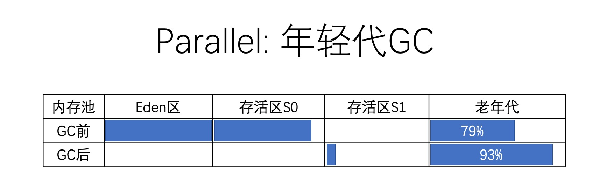
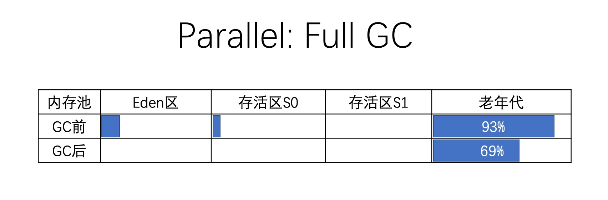

- 01 阅读此专栏的正确姿势.md.html
- 02 环境准备：千里之行，始于足下.md.html
- 03 常用性能指标：没有量化，就没有改进.md.html
- 04 JVM 基础知识：不积跬步，无以至千里.md.html
- 05 Java 字节码技术：不积细流，无以成江河.md.html
- 06 Java 类加载器：山不辞土，故能成其高.md.html
- 07 Java 内存模型：海不辞水，故能成其深.md.html
- 08 JVM 启动参数详解：博观而约取、厚积而薄发.md.html
- 09 JDK 内置命令行工具：工欲善其事，必先利其器.md.html
- 10 JDK 内置图形界面工具：海阔凭鱼跃，天高任鸟飞.md.html
- 11 JDWP 简介：十步杀一人，千里不留行.md.html
- 12 JMX 与相关工具：山高月小，水落石出.md.html
- 13 常见的 GC 算法（GC 的背景与原理）.md.html
- 14 常见的 GC 算法（ParallelCMSG1）.md.html
- 15 Java11 ZGC 和 Java12 Shenandoah 介绍：苟日新、日日新、又日新.md.html
- 16 Oracle GraalVM 介绍：会当凌绝顶、一览众山小.md.html
- 17 GC 日志解读与分析（基础配置）.md.html
- 18 GC 日志解读与分析（实例分析上篇）.md.html
- 19 GC 日志解读与分析（实例分析中篇）.md.html
- 20 GC 日志解读与分析（实例分析下篇）.md.html
- 21 GC 日志解读与分析（番外篇可视化工具）.md.html
- 22 JVM 的线程堆栈等数据分析：操千曲而后晓声、观千剑而后识器.md.html
- 23 内存分析与相关工具上篇（内存布局与分析工具）.md.html
- 24 内存分析与相关工具下篇（常见问题分析）.md.html
- 25 FastThread 相关的工具介绍：欲穷千里目，更上一层楼.md.html
- 26 面临复杂问题时的几个高级工具：它山之石，可以攻玉.md.html
- 27 JVM 问题排查分析上篇（调优经验）.md.html
- 28 JVM 问题排查分析下篇（案例实战）.md.html
- 29 GC 疑难情况问题排查与分析（上篇）.md.html
- 30 GC 疑难情况问题排查与分析（下篇）.md.html
- 31 JVM 相关的常见面试问题汇总：运筹策帷帐之中，决胜于千里之外.md.html
- 32 应对容器时代面临的挑战：长风破浪会有时、直挂云帆济沧海.md.html
18 GC 日志解读与分析（实例分析上篇）
上一节讲述了 GC 日志相关的基础信息和配置。
需要提醒的是，这些参数是基于 JDK 8 配置的。
在 JDK 9 之后的版本中，启动参数有一些变化，继续使用原来的参数配置可能会在启动时报错。不过也不用担心，如果碰到，一般都可以从错误提示中找到对应的处置措施和解决方案。
例如 JDK 11 版本中打印 info 级别 GC 日志的启动脚本：
# JDK 11 环境，输出 info 级别的 GC 日志
java -Xms512m -Xmx512m
-Xlog:gc*=info:file=gc.log:time:filecount=0
demo.jvm0204.GCLogAnalysis
从 JDK 9 开始，可以使用命令 java -Xlog:help 来查看当前 JVM 支持的日志参数，本文不进行详细的介绍，有兴趣的同学可以查看 JEP 158: Unified JVM Logging 和 JEP 271: Unified GC Logging。
另外，JMX 技术提供了 GC 事件的通知机制，监听 GC 事件的示例程序我们会在《应对容器时代面临的挑战》这一章节中给出。
但很多情况下 JMX 通知事件中报告的 GC 数据并不完全，只是一个粗略的统计汇总。
GC 日志才是我们了解 JVM 和垃圾收集器最可靠和全面的信息，因为里面包含了很多细节。再次强调，分析 GC 日志是一项很有价值的技能，能帮助我们更好地排查性能问题。
下面我们通过实际操作来分析和解读 GC 日志。
Serial GC 日志解读
关于串行垃圾收集器的介绍，请参考前面的文章：《常见 GC 算法介绍》。
首先，为了打开 GC 日志记录，我们使用下面的 JVM 启动参数如下：
# 请注意命令行启动时没有换行，此处是手工排版
java -XX:+UseSerialGC
-Xms512m -Xmx512m
-Xloggc:gc.demo.log
-XX:+PrintGCDetails
-XX:+PrintGCDateStamps
demo.jvm0204.GCLogAnalysis
让我们看看 Serial GC 的垃圾收集日志，并从中提取信息。
启用串行垃圾收集器，程序执行后输出的 GC 日志类似这样（为了方便大家阅读，已手工折行）：
Java HotSpot(TM) 64-Bit Server VM (25.162-b12) ......
Memory: 4k page，physical 16777216k(1551624k free)
CommandLine flags:
-XX:InitialHeapSize=536870912 -XX:MaxHeapSize=536870912
-XX:+PrintGC -XX:+PrintGCDateStamps
-XX:+PrintGCDetails -XX:+PrintGCTimeStamps
-XX:+UseCompressedClassPointers -XX:+UseCompressedOops
-XX:+UseSerialGC
2019-12-15T15:18:36.592-0800: 0.420:
[GC (Allocation Failure)
2019-12-15T15:18:36.592-0800: 0.420:
[DefNew: 139776K->17472K(157248K)，0.0364555 secs]
139776K->47032K(506816K)，
0.0365665 secs]
[Times: user=0.02 sys=0.01，real=0.03 secs]
......
2019-12-15T15:18:37.081-0800: 0.908:
[GC (Allocation Failure)
2019-12-15T15:18:37.081-0800: 0.908:
[DefNew: 156152K->156152K(157248K)，0.0000331 secs]
2019-12-15T15:18:37.081-0800: 0.908:
[Tenured: 299394K->225431K(349568K)，0.0539242 secs]
455546K->225431K(506816K)，
[Metaspace: 3431K->3431K(1056768K)]，
0.0540948 secs]
[Times: user=0.05 sys=0.00，real=0.05 secs]
日志的第一行是 JVM 版本信息，第二行往后到第一个时间戳之间的部分，展示了内存分页、物理内存大小，命令行参数等信息，这部分前面介绍过，不在累述。
仔细观察，我们发现在这段日志中发生了两次 GC 事件，其中一次清理的是年轻代，另一次清理的是整个堆内存。让我们先来分析前一次年轻代 GC 事件。
Minor GC 日志分析
这次年轻代 GC 事件对应的日志内容：
2019-12-15T15:18:36.592-0800: 0.420:
[GC (Allocation Failure)
2019-12-15T15:18:36.592-0800: 0.420:
[DefNew: 139776K->17472K(157248K)，0.0364555 secs]
139776K->47032K(506816K)，
0.0365665 secs]
[Times: user=0.02 sys=0.01，real=0.03 secs]
从中可以解读出这些信息：
2019-12-15T15:18:36.592-0800：GC 事件开始的时间点。其中-0800表示当前时区为东八区，这只是一个标识，方便我们直观判断 GC 发生的时间点。后面的0.420是 GC 事件相对于 JVM 启动时间的间隔，单位是秒。GC用来区分 Minor GC 还是 Full GC 的标志。GC表明这是一次小型 GC（Minor GC），即年轻代 GC。Allocation Failure表示触发 GC 的原因。本次 GC 事件，是由于对象分配失败，年轻代中没有空间来存放新生成的对象引起的。DefNew表示垃圾收集器的名称。这个名字表示：年轻代使用的单线程、标记—复制、STW 垃圾收集器。139776K->17472K表示在垃圾收集之前和之后的年轻代使用量。(157248K)表示年轻代的总空间大小。进一步分析可知：GC 之后年轻代使用率为 11%。139776K->47032K(506816K)表示在垃圾收集之前和之后整个堆内存的使用情况。(506816K)则表示堆内存可用的总空间大小。进一步分析可知：GC 之后堆内存使用量为 9%。0.0365665 secs：GC 事件持续的时间，以秒为单位。[Times: user=0.02 sys=0.01，real=0.03 secs]：此次 GC 事件的持续时间，通过三个部分来衡量。user 部分表示所有 GC 线程消耗的 CPU 时间；sys 部分表示系统调用和系统等待事件消耗的时间。real 则表示应用程序暂停的时间。因为串行垃圾收集器（Serial Garbage Collector）只使用单个线程，所以这里 real=user+system，0.03 秒也就是 30 毫秒。
凭经验，这个暂停时间对大部分系统来说可以接受，但对某些延迟敏感的系统就不太理想了，比如实时的游戏服务、高频交易业务，30ms 暂停导致的延迟可能会要了亲命。
这样解读之后，我们可以分析 JVM 在 GC 事件中的内存使用以及变化情况。
在此次垃圾收集之前，堆内存总的使用量为 139776K，其中年轻代使用了 139776K。可以算出，GC 之前老年代空间的使用量为 0。（实际上这是 GC 日志中的第一条记录）
这些数字中蕴含了更重要的信息：
- GC 前后对比，年轻代的使用量为 139776K->17472K，减少了 122304K。
- 但堆内存的总使用量 139776K->47032K，只下降了 92744K。
可以算出，从年轻代提升到老年代的对象占用了“122304K-92744K=29560K”的内存空间。当然，另一组数字也能推算出 GC 之后老年代的使用量：47032K-17472K=29560K。
总结：
通过这么分析下来，同学们应该发现，我们关注的主要是两个数据：GC 暂停时间，以及 GC 之后的内存使用量/使用率。
此次 GC 事件的示意图如下所示：
Full GC 日志分析
分析完第一次 GC 事件之后，我们心中应该有个大体的模式了。一起来看看另一次 GC 事件的日志：
2019-12-15T15:18:37.081-0800: 0.908:
[GC (Allocation Failure)
2019-12-15T15:18:37.081-0800: 0.908:
[DefNew: 156152K->156152K(157248K)，0.0000331 secs]
2019-12-15T15:18:37.081-0800: 0.908:
[Tenured: 299394K->225431K(349568K)，0.0539242 secs]
455546K->225431K(506816K)，
[Metaspace: 3431K->3431K(1056768K)]，
0.0540948 secs]
[Times: user=0.05 sys=0.00，real=0.05 secs]
从中可以解读出这些信息：
2019-12-15T15:18:37.081-0800：GC 事件开始的时间。[DefNew: 156152K->156152K(157248K)，0.0000331 secs]：前面已经解读过了，因为内存分配失败，发生了一次年轻代 GC。此次 GC 同样用的 DefNew 收集器。注意：此次垃圾收集消耗了 0.0000331 秒，基本上确认本次 GC 事件没怎么处理年轻代。Tenured：用于清理老年代空间的垃圾收集器名称。Tenured表明使用的是单线程的 STW 垃圾收集器，使用的算法为“标记—清除—整理（mark-sweep-compact）”。299394K->225431K(349568K)表示 GC 前后老年代的使用量，以及老年代的空间大小。0.0539242 secs是清理老年代所花的时间。455546K->225431K(506816K)：在 GC 前后整个堆内存部分的使用情况，以及可用的堆空间大小。[Metaspace: 3431K->3431K(1056768K)]：Metaspace 空间的变化情况。可以看出，此次 GC 过程中 Metaspace 也没有什么变化。[Times: user=0.05 sys=0.00，real=0.05 secs]：GC 事件的持续时间，分为 user、sys、real 三个部分。因为串行垃圾收集器只使用单个线程，因此“real=user+system”。50 毫秒的暂停时间，比起前面年轻代的 GC 来说增加了一倍左右。这个时间跟什么有关系呢？答案是：GC 时间，与 GC 后存活对象的总数量关系最大。
进一步分析这些数据，GC 之后老年代的使用率为：225431K/349568K=64%，这个比例不算小，但也不能就此说出了什么问题，毕竟 GC 后内存使用量下降了，还需要后续的观察……
和年轻代 GC 相比，比较明显的差别是此次 GC 事件清理了老年代和 Metaspace。
总结：
FullGC，我们主要关注 GC 之后内存使用量是否下降，其次关注暂停时间。简单估算，GC 后老年代使用量为 220MB 左右，耗时 50ms。如果内存扩大 10 倍，GC 后老年代内存使用量也扩大 10 倍，那耗时可能就是 500ms 甚至更高，就会系统有很明显的影响了。这也是我们说串行 GC 性能弱的一个原因，服务端一般是不会采用串行 GC 的。
此次 GC 事件的内存变化情况，可以表示为下面的示意图：
年轻代看起来数据几乎没变化，怎么办？因为上下文其实还有其他的 GC 日志记录，我们照着这个格式去解读即可。
Parallel GC 日志解读
并行垃圾收集器对年轻代使用“标记—复制（mark-copy）”算法，对老年代使用“标记—清除—整理（mark-sweep-compact）”算法。
年轻代和老年代的垃圾回收时都会触发 STW 事件，暂停所有的应用线程，再来执行垃圾收集。在执行“标记”和“复制/整理”阶段时都使用多个线程，因此得名“Parallel”。
通过多个 GC 线程并行执行的方式，能使 JVM 在多 CPU 平台上的 GC 时间大幅减少。
通过命令行参数 -XX:ParallelGCThreads=NNN 可以指定 GC 线程的数量，其默认值为 CPU 内核数量。
下面的三组命令行参数是等价的，都可用来指定并行垃圾收集器：
-XX:+UseParallelGC
-XX:+UseParallelOldGC
-XX:+UseParallelGC -XX:+UseParallelOldGC
示例：
# 请注意命令行启动时没有换行
java -XX:+UseParallelGC
-Xms512m -Xmx512m
-Xloggc:gc.demo.log
-XX:+PrintGCDetails
-XX:+PrintGCDateStamps
demo.jvm0204.GCLogAnalysis
并行垃圾收集器适用于多核服务器，其主要目标是增加系统吞吐量（也就是降低 GC 总体消耗的时间）。为了达成这个目标，会使用尽可能多的 CPU 资源：
- 在 GC 事件执行期间，所有 CPU 内核都在并行地清理垃圾，所以暂停时间相对来说更短；
- 在两次 GC 事件中间的间隔期，不会启动 GC 线程，所以这段时间内不会消耗任何系统资源。
另一方面，因为并行 GC 的所有阶段都不能中断，所以并行 GC 很可能会出现长时间的卡顿。
长时间卡顿的意思，就是并行 GC 启动后，一次性完成所有的 GC 操作，所以单次暂停的时间较长。
假如系统延迟是非常重要的性能指标，那么就应该选择其他垃圾收集器。
执行上面的命令行，让我们看看并行垃圾收集器的 GC 日志长什么样子：
CommandLine flags:
-XX:InitialHeapSize=536870912 -XX:MaxHeapSize=536870912
-XX:+PrintGC -XX:+PrintGCDateStamps -XX:+PrintGCDetails -XX:+PrintGCTimeStamps
-XX:+UseCompressedClassPointers -XX:+UseCompressedOops
-XX:+UseParallelGC
......
2019-12-18T00:37:47.463-0800: 0.690:
[GC (Allocation Failure)
[PSYoungGen: 104179K->14341K(116736K)]
383933K->341556K(466432K)，0.0229343 secs]
[Times: user=0.04 sys=0.08，real=0.02 secs]
2019-12-18T00:37:47.486-0800: 0.713:
[Full GC (Ergonomics)
[PSYoungGen: 14341K->0K(116736K)]
[ParOldGen: 327214K->242340K(349696K)]
341556K->242340K(466432K)，
[Metaspace: 3322K->3322K(1056768K)]，
0.0656553 secs]
[Times: user=0.30 sys=0.02，real=0.07 secs]
......
如果跑出来的 GC 日志和阶段不一样的话，可以多跑几次试试，因为我们用了随机数嘛。
Minor GC 日志分析
前面的 GC 事件是发生在年轻代 Minor GC：
2019-12-18T00:37:47.463-0800: 0.690:
[GC (Allocation Failure)
[PSYoungGen: 104179K->14341K(116736K)]
383933K->341556K(466432K)，0.0229343 secs]
[Times: user=0.04 sys=0.08，real=0.02 secs]
解读如下：
2019-12-18T00:37:47.463-0800: 0.690：GC 事件开始的时间。GC：用来区分 Minor GC 还是 Full GC 的标志。这里是一次“小型 GC（Minor GC）”。PSYoungGen：垃圾收集器的名称。这个名字表示的是在年轻代中使用并行的“标记—复制（mark-copy）”，全线暂停（STW）垃圾收集器。104179K->14341K(116736K)表示 GC 前后的年轻代使用量，以及年轻代的总大小，简单计算 GC 后的年轻代使用率 14341K/116736K=12%。383933K->341556K(466432K)则是 GC 前后整个堆内存的使用量，以及此时可用堆的总大小，GC 后堆内存使用率为 341556K/466432K=73%，这个比例不低，事实上前面已经发生过 FullGC 了，只是这里没有列出来。[Times: user=0.04 sys=0.08，real=0.02 secs]：GC 事件的持续时间，通过三个部分来衡量。user 表示 GC 线程所消耗的总 CPU 时间，sys 表示操作系统调用和系统等待事件所消耗的时间； real 则表示应用程序实际暂停的时间。因为并不是所有的操作过程都能全部并行，所以在 Parallel GC 中，real 约等于 user+system/GC 线程数。笔者的机器是 8 个物理线程，所以默认是 8 个 GC 线程。分析这个时间，可以发现，如果使用串行 GC，可能得暂停 120 毫秒，但并行 GC 只暂停了 20 毫秒，实际上性能是大幅度提升了。
通过这部分日志可以简单算出：在 GC 之前，堆内存总使用量为 383933K，其中年轻代为 104179K，那么可以算出老年代使用量为 279754K。
在此次 GC 完成后，年轻代使用量减少了 104179K-14341K=89838K，总的堆内存使用量减少了 383933K-341556K=42377K。
那么我们可以计算出有“89838K-42377K=47461K”的对象从年轻代提升到老年代。老年代的使用量为：341556K-14341K=327215K。
老年代的大小为 466432K-116736K=349696K，使用率为 327215K/349696K=93%，基本上快满了。
总结：
年轻代 GC，我们可以关注暂停时间，以及 GC 后的内存使用率是否正常，但不用特别关注 GC 前的使用量，而且只要业务在运行，年轻代的对象分配就少不了，回收量也就不会少。
此次 GC 的内存变化示意图为：

Full GC 日志分析
前面介绍了并行 GC 清理年轻代的 GC 日志，下面来看看清理整个堆内存的 GC 日志：
2019-12-18T00:37:47.486-0800: 0.713:
[Full GC (Ergonomics)
[PSYoungGen: 14341K->0K(116736K)]
[ParOldGen: 327214K->242340K(349696K)]
341556K->242340K(466432K)，
[Metaspace: 3322K->3322K(1056768K)]，
0.0656553 secs]
[Times: user=0.30 sys=0.02，real=0.07 secs]
解读一下：
2019-12-18T00:37:47.486-0800：GC 事件开始的时间。Full GC：完全 GC 的标志。Full GC表明本次 GC 清理年轻代和老年代，Ergonomics是触发 GC 的原因，表示 JVM 内部环境认为此时可以进行一次垃圾收集。[PSYoungGen: 14341K->0K(116736K)]：和上面的示例一样，清理年轻代的垃圾收集器是名为“PSYoungGen”的 STW 收集器，采用“标记—复制（mark-copy）”算法。年轻代使用量从 14341K 变为 0，一般 Full GC 中年轻代的结果都是这样。ParOldGen：用于清理老年代空间的垃圾收集器类型。在这里使用的是名为 ParOldGen 的垃圾收集器，这是一款并行 STW 垃圾收集器，算法为“标记—清除—整理（mark-sweep-compact）”。327214K->242340K(349696K)]：在 GC 前后老年代内存的使用情况以及老年代空间大小。简单计算一下，GC 之前，老年代使用率为 327214K/349696K=93%，GC 后老年代使用率 242340K/349696K=69%，确实回收了不少。那么有多少内存提升到老年代呢？其实在 Full GC 里面不好算，而在 Minor GC 之中比较好算，原因大家自己想一想。341556K->242340K(466432K)：在垃圾收集之前和之后堆内存的使用情况，以及可用堆内存的总容量。简单分析可知，GC 之前堆内存使用率为 341556K/466432K=73%，GC 之后堆内存的使用率为：242340K/466432K=52%。[Metaspace: 3322K->3322K(1056768K)]：前面我们也看到了关于 Metaspace 空间的类似信息。可以看出，在 GC 事件中 Metaspace 里面没有回收任何对象。0.0656553secs：GC 事件持续的时间，以秒为单位。[Times: user=0.30 sys=0.02，real=0.07 secs]：GC 事件的持续时间，含义参见前面。
Full GC 和 Minor GC 的区别是很明显的，此次 GC 事件除了处理年轻代，还清理了老年代和 Metaspace。
总结：
Full GC 时我们更关注老年代的使用量有没有下降，以及下降了多少。如果 FullGC 之后内存不怎么下降，使用率还很高，那就说明系统有问题了。
此次 GC 的内存变化示意图为：

细心的同学可能会发现，此次 FullGC 事件和前一次 MinorGC 事件是紧挨着的：0.690+0.02secs~0.713。因为 Minor GC 之后老年代使用量达到了 93%，所以接着就触发了 Full GC。
本节到此就结束了，下节我们接着分析 CMS GC 日志。